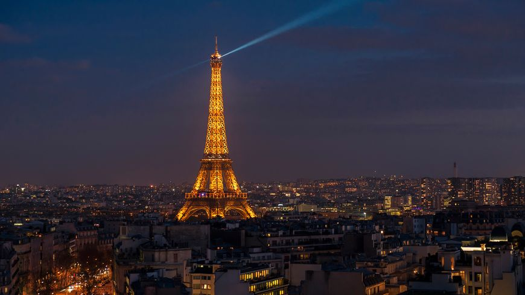
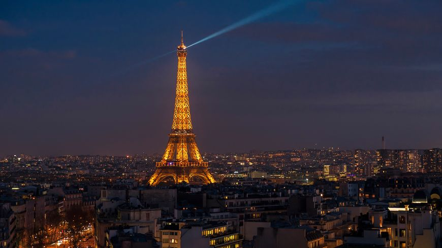
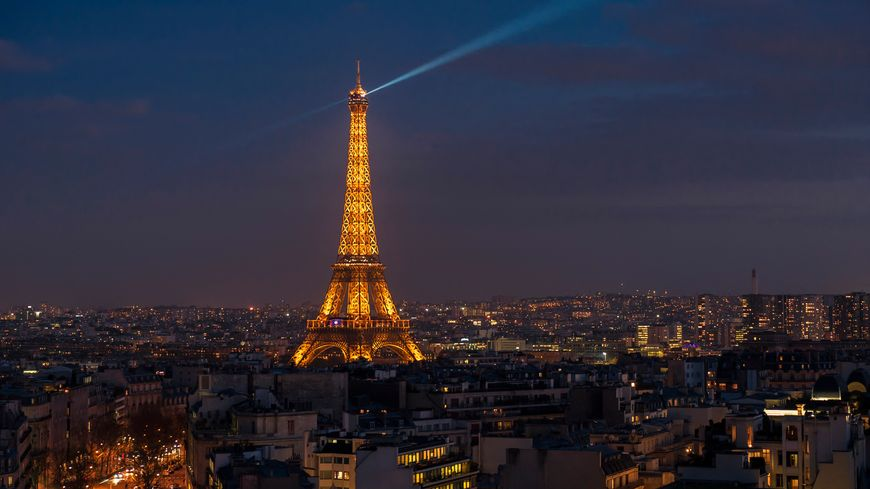
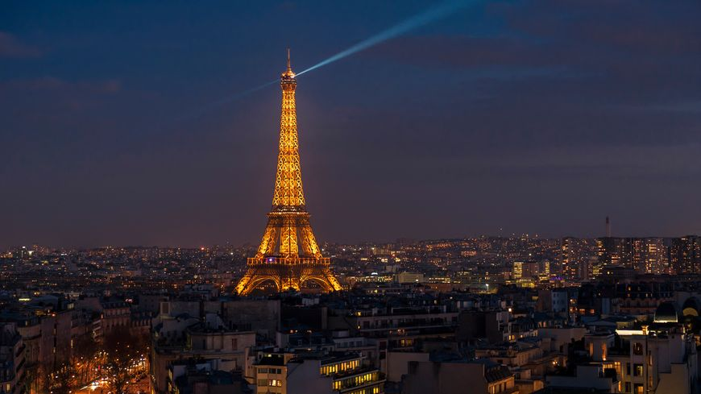

.jpg)
.jpg) 

.jpg) 

C'est sur les bords de la Seine, à Paris, que se dresse la tour Eiffel, magnifique structure en fer qui illumine Paris et d'un point de vue plus général, la France. Si un seul élément architectural français devait représenter ce pays, ce serait sans conteste elle, bien avant d'autres monuments pourtant tout aussi prestigieux. Avec une taille de 312m à sa construction, la tour Eiffel a été pendant plus de 30 ans la construction la plus haute du Monde, jusqu'à la construction de l'Empire State Building, à New-York. Aujourd'hui elle mesure 324m (grâce aux antennes qui y ont été ajoutées depuis) et c'est le plus beau symbole de Paris, mais aussi de la France. Dotée de 3 étages, plus un abandonné depuis fort longtemps, elle appartient à la ville de Paris.
La tour Eiffel est une structure unique au monde, il existe bien d'autres tours métalliques, mais celle-là est particulière car elle est un monument historique et visitable, alors que les autres ne sont que des structures décoratives (comme la tour Orbit Arcelor-Mittal à Londres) ou bien moins hautes. C'est aussi pour ça que les Français ont un attachement particulier à la tour Eiffel.
La Tour Eiffel a jailli pour le centenaire de la prise de la Bastille, en 1889, du côté du champs de Mars bordant la Seine, sur le lieu même où le 14 juillet 1790 s'était célébré un des temps forts de la Révolution Française. Les entreprises industrielles se multiplient, on découvrir le pouvoir des métaux pour les constructions. Tous les pays veulent montrer leurs suprématies dans ce domaine. C'est dans ce contexte qu'arrive l'exposition universelle de 1889.De ce fait les gouvernants de 1889 décidèrent de célébrer dans un monument - le plus haut jamais construit - "signe des temps", "clou de trois cents mètres" qui allait montrer au monde que le génie de la liberté avait accouché du génie de l'industrie. La tour devait dominer le reste de l'exposition où s'alignaient, entre autres merveilles...
Le projet d'Eiffel et Sauvestre l'emporta. Toute la gloire en reste à Gustave Eiffel (1832-1923) ingénieur, qui s'était déjà illustré par la construction du viaduc du Garabit. De ce fait la tour de 1889 s'élevait à 300.01 mètres au-dessus du niveau du sol. De nos jours, depuis la construction de l'antenne de télévision rajoutée en 1957, c'est du haut de ses 318 mètres qu'elle contemple Paris.
.jpg)
La Tour Eiffel comprend 3 étages :
Le premier, très épuré depuis qu'il a été refaite (en 2011), est très bien fait. Il contient un petit musée, un cinéma, des boutiques, une salle de conférence, un restaurant, et des planchers de verre pour l'amusement. Le deuxième est resté plus dans l'esprit de la tour, il est plus technologique. Il contient des boutiques et une belle galerie qui en fait le tour.
Le 3e étage contient des photos anciennes, une frise positionnant les principaux monuments du monde, un bar à champagne, et tout un tas d'autres choses. En bien sûr, la vue de chaque étage est sans doute la plus belle chose que l'on peut trouver sur la tour.
.jpg)
Visiter la tour Eiffel, c'est simple ! Parfaitement accessible de tous les types de transport parisien, ouverte durant une large plage horaire, vous pourrez prendre tout le temps que vous voudrez, il n'y a pas de temps limité pour sa visite, ni de circuit imposé.